Abfragen in Relationen - eine Einführung
Bei aller Bedeutung für die GIS-Praxis sind sowohl relationale Datenmodelle als auch SQL für GIS-Anwender nur Mittel zum Zweck gezielte Abfragen und Auswertungen auf die in den Tabellen vorliegenden räumlich-inhaltichen Daten vorzunehmen. Gemeinhin wird dieser Vorgang Datenanalyse genannt. Datenanalysen werden mit Hilfe von SQL als Abfragen auf die Grundelemente der Relationen (Tabelle, Feld, Datensatz, Wert und Assoziation) durchgeführt und in Aussagen überführt. Prinzipiell sind drei Ansätze möglich:
- Thematische Abfragen:
Selektiert die Objekte, deren Eigenschaften (Attribute) die gestellten Bedingungen erfüllen. Z. B.: „Selektiere alle Bäume der Art Fichte.“ - Geometrische Abfragen:
Selektiert die Objekte, welche die gestellten räumlichen Bedingungen erfüllen. Z. B.: „Selektiere alle Häuser, die weniger als 250 m vom Fluss entfernt sind.“ - Topologische Abfragen:
Selektiert die Objekte, welche die gestellten Bedingungen bezüglich den räumlichen Beziehungen zwischen den Objekten erfüllen. Z. B.: „Selektiere alle Gebäude, die vollständig in der Wohnzone II (WII) liegen.“
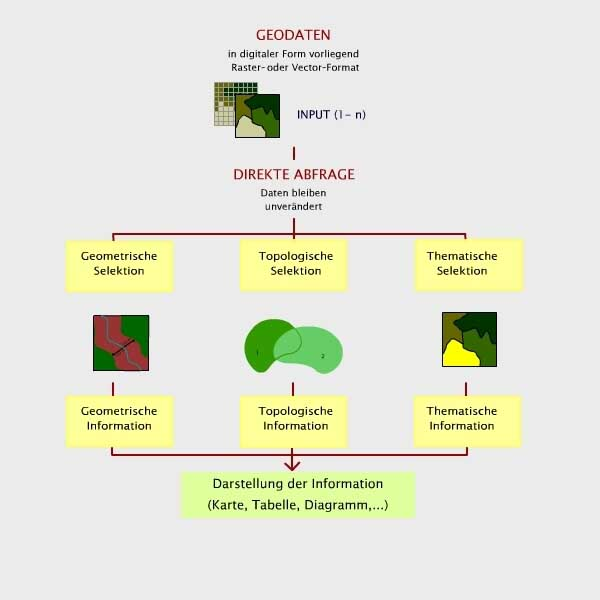
Gliederung der nicht-manipulativen GI-Abfragen (GITTA 2005)Auswahloperatoren
Zentrales Hilfsmittel von Abfragen an GI-Systeme sind sogenannte Auswahloperatoren auch algebraische Operatoren genannt. Sie gliedern sich in:
- Vergleichende Operatoren: Für die Formulierung von Fragen können neben dem Gleichheitszeichen auch Vergleichsoperatoren verwendet werden.
- Arithmetische Operatoren: Diese Operatoren werden für numerische Attribute verwendet. Z. B. aus einer Reihe ausgewählter Objekte können Mittelwerte von einem Attribut, Summen von Attributwerten usw. berechnet werden.
- Logische Operatoren: Mit logischen Operatoren werden Bedingungen formuliert.
Vergleichsoperatoren
Die Vergleichsoperatoren können für unterschiedlich skalierte Attribute (numerisch, Text) verwendet werden. Bei nicht numerischen Attributen beziehen sich Vergleiche „größer als“, „kleiner als“ usw. auf die Position in einer internen vom Computer verwendeten „alphabetischen“ Ordnung (z.B. ASCII-Code Tabelle).
| Vergleichende Operatoren | Bedeutung |
|---|---|
| = | EQ (gleich) |
| > | GT (größer) |
| >= | GE (größer gleich) |
| < | LT (kleiner) |
| <= | LE (kleiner gleich) |
| <> | NE (ungleich) |
Arithmetische Operatoren
Die arithmetischen Operatoren werden
für numerische Attribute verwendet. Z. B. aus einer Reihe ausgewählter Objekte
können Mittelwerte von einem Attribut, Summen von Attributwerten usw. berechnet
werden. Als arithmetische Operatoren können der Multiplikations- (*), der
Divisions- (/), der Additions- (+) und der Subtraktionsoperator (-), der
Exponent (exp) sowie der Modulo-Operator (%) verwendet werden. Die
Modulo-Operation liefert den Rest einer ganzzahligen Division. Dazu zwei
Beispiele:
5 % 2 = 1
6 % 2 = 0
Logische Operatoren
Logische Operatoren verbinden Attribute oder Teilabfragen als logische Ausdrücke (mit den zwei möglichen Werten „wahr“ oder „falsch“). Sie eigenen sich daher für eine effiziente Gestaltung komplexer Abfragen. Die logischen Operatoren werden auch Boolesche Algebra genannt. Sie basiert auf der binären Struktur, die auf den Werten 1 (wahr) und 0 (falsch) beruht. Dazu bietet die eine Reihe verschiedener Verknüpfungen, die „wahr“ oder „falsch“ sein können, nie aber beides. Die in GIS für die Verknüpfung von zwei räumlichen Auswahlkriterien verwendeten Booleschen (oder logischen) Operatoren sind AND, OR, XOR und NOT: Die nachfolgende Tabelle listet die 4 logischen Grundoperatoren und Ihre Wirkungsweise auf:
Zur Verdeutlichung sind in der rechten Spalte die Venn-Diagramme der Booleschen Operatoren dargestellt. Die Darstellung wird verständlicher wenn man sich vorstellt, dass die Kreis 1 und Kreis 2 jeweils graphisch zwei Bedingungen (oder Untermengen der Relation) darstellen. Die schraffierte Fläche repräsentiert jeweils die wahre Aussage. In dieser Grundform entspricht der Teil außerhalb der Kreise keinem Abfrageresultat.
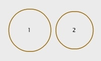
(GITTA 2005)Kreis 1 : GEBIET = „bewaldet“
Kreis 2 : GEBIET = steil
| Logische Operatoren | Bedeutung | Ergebnis | Frage | Venn-Diagramme |
|---|---|---|---|---|
| AND | Schnittmenge | Ergibt „wahr“ für alle Gebiete, die sowohl das erste als auch das zweite Kriterium erfüllen. | „Welche Gebiete sind bewaldet und steil?“ | 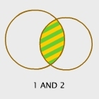 |
| OR | Vereinigung | Ergibt „wahr“ für alle Gebiete, die entweder das erste oder das zweite Kriterium erfüllen, unabhängig davon, ob sich die Gebiete überlagern oder nicht. Anders ausgedrückt, muss mindestens eines der beiden Kriterien „wahr“ sein. | „Welche Gebiete sind bewaldet oder steil?“ | 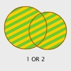 |
| XOR | exklusive Vereinigung | Ergibt „wahr“ für alle Gebiete, die entweder das erste oder das zweite Kriterium erfüllen, aber nicht beide. | „Welche Gebiete sind entweder bewaldet oder steil, aber nicht beides?“ | 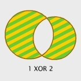 |
| NOT | Negation | Ergibt „wahr“ für alle Gebiete, die das erste Kriterium erfüllen, nicht aber das zweite. | „Welche Gebiete sind bewaldet, aber nicht steil?“ | 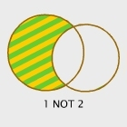 |
In vielen GIS-Programmen entsprechen die Booleschen Operatoren direkt aufrufbaren Funktionen und tragen oft vergleichbare Namen. So gibt es in vielen GIS-Produkten die Funktionen INTERSECT (AND), UNION (OR) und ERASE (NOT). Die letzte Funktion wird auch sehr anschaulich „cookie cutting“ genannt, weil die Form des zweiten Kriteriums wie beim Plätzchen-Backen aus dem ausgerollten Teig des ersten „ausgestochen“ wird.
Logische Operatoren und ihre Wirkungsweise
Am einfachsten lassen sich die Booleschen Operatoren mit Hilfe der oben bereits gezeigten Venn-Diagramme veranschaulichen. Die Menge, für die der jeweilige Boolesche Ausdruck „wahr“ ergibt, wird in der nachfolgenden Interaktiven Grafik blau hervorgehoben. Wählen Sie im Venn-Diagramm eine Menge aus und vergleichen Sie den entsprechenden Booleschen Ausdruck. Sie können auch umgekehrt vorgehen: Wählen Sie einen Booleschen Ausdruck und vergleichen Sie die selektierte Menge.
Animation des Venn-Diagrammes zur Erläuterung der Booleschen Ausdrücke (GITTA 2005)Vom Venn-Diagramm zum Fallbeispiel
Die nachfolgende Animation illustriert die Boolesche Verschneidung an einem vereinfachten Fallbeispiel einer hypothetischen „Eignungsanalyse Wolfslebensraum“.
Hintergrund Lebensraum Wolf... (Klicken Sie hier für mehr Informationen)
Als Eingangsdaten stehen die Kriterien Landnutzung und Hangneigung zur Verfügung. Zur Verdeutlichung der unterschiedlichen Logik wird dem Vektormodell das Rastermodell gegenübergestellt. Bestimmen Sie zunächst, welche Landnutzungs- resp. Hangneigungskategorien Sie verschneiden wollen (Ankreuzfelder in Legendenfenster). Wählen Sie anschließend den logischen Operator. Der Schalter „Berechnen“ zeigt das Resultat. Benutzen Sie die beiden Animationen, um Ihr Verständnis der Booleschen Verschneidung zu vertiefen. Vergleichen Sie außerdem jeweils die Vektor- mit der Rasterlösung.| (GITTA 2005) | (GITTA 2005) |
Kombination der Operatoren
Durch die Kombination von Operatoren ist es möglich, mehrere Bedingungen zu verknüpfen. allerdings sind Boolesche Operatoren nicht kommutativ, d. h. das Ergebnis ihrer Anwendung in komplizierteren Ausdrücken hängt von der definierten Reihenfolge der Teilausdrücke ab. Betrachten Sie die nachfolgenden Beispiele und versuchen Sie anhand Ihrer bisherigen Kenntnisse die Abfragen mit ihren Komponenten nachzuvollziehen.
| Ebene 1 | Ebene 2 | Inputs | Abfrage | Typ | Erg. Tabelle | Erg. Grafik |
|---|---|---|---|---|---|---|
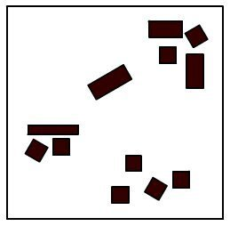 |
Suche die Gebäude, die eine Fläche größer als 100m2 haben. | THEM | 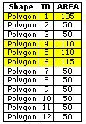 |
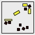 |
||
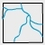 |
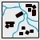 |
Suche die Gebäude, die eine Fläche größer als 100m2 haben, und die weniger als 100m vom Adelbach entfernt liegen. | GEOM + THEM | 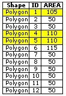 |
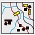 |
|
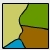 |
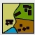 |
Suche die Gebäude, die sich vollständig im Wald befinden. | TOPO | 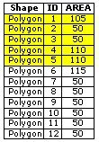 |
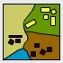 |
|
| Suche die Fläche, die weniger als 100m vom Adelbach entfernt liegt. | GEOM | 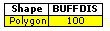 |
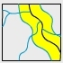 |
|||
| Suche das Gebäude das dem Adelbach am nächsten liegt. | GEOM | 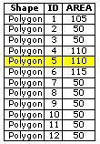 |
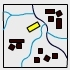 |
Bearbeiten Sie...
- Warum ist eine Unterscheidung in vergleichende, arithmetische und logische Operatoren Ihrer Meinung nach sinnvoll?
- Können Sie noch spontan den Unterschied zwischen "ist gleich" (=) und logischem UND erläutern?